Enterprise SOC Analyst Case Study
Project Overview
This project demonstrates an end-to-end SOC Analyst investigation within the MaryShield Cyber Lab. The exercise combines alert triage, log analysis, endpoint investigation, network investigation, firewall analysis, MITRE ATT&CK mapping, timeline reconstruction, containment, eradication, recovery, and final reporting.
Evidence is correlated across Splunk Enterprise, Wazuh XDR, Security Onion, pfSense, Windows Security Event Logs, Sysmon, Active Directory, Kali Linux, and other lab systems to demonstrate a realistic multi-platform security operations workflow.
All simulated activity documented in this case study was performed only within the isolated and authorized MaryShield Cyber Lab environment.
SOC Analyst Role
The SOC Analyst is responsible for monitoring security telemetry, validating alerts, investigating suspicious behavior, determining scope and impact, coordinating containment, documenting evidence, and recommending defensive improvements.
Monitoring
Review SIEM, endpoint, network, and firewall telemetry for suspicious activity.
Triage
Determine whether an alert represents benign activity, a false positive, or a security incident.
Investigation
Correlate users, systems, processes, IP addresses, timestamps, and alerts.
Response
Support containment, remediation, recovery, and post-incident review.
Enterprise SOC Architecture
The architecture below shows how security telemetry is collected from endpoints, servers, network sensors, firewalls, and testing systems and correlated across the MaryShield security operations stack.
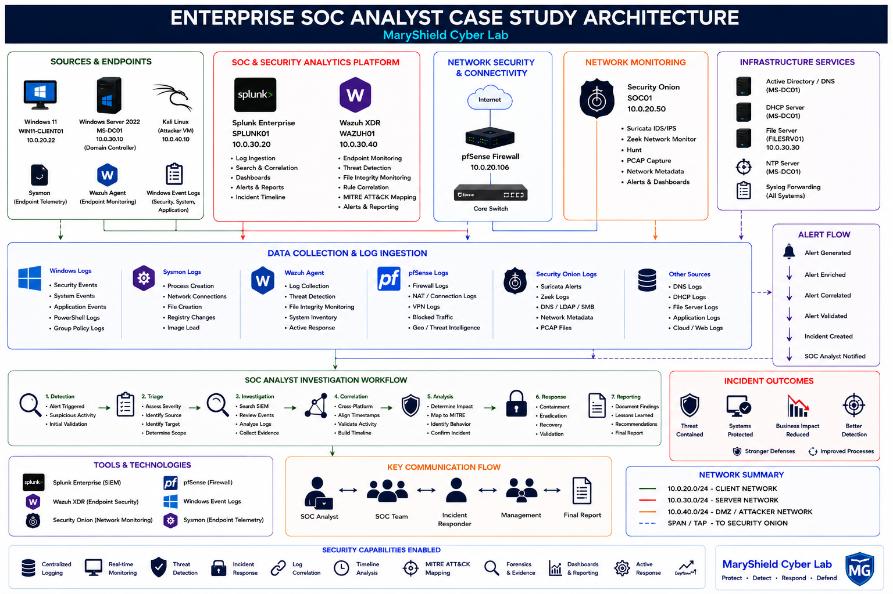
Incident Scenario
A controlled multi-stage security scenario was generated within the lab to provide realistic telemetry for SOC investigation.
The simulated activity included reconnaissance, authentication anomalies, suspicious endpoint behavior, and follow-on activity that required correlation across multiple defensive platforms.
Scenario Objectives
- Generate realistic attack telemetry.
- Validate monitoring coverage.
- Perform alert triage.
- Correlate endpoint and network evidence.
- Determine scope and impact.
- Contain the simulated incident.
- Document remediation and recovery.
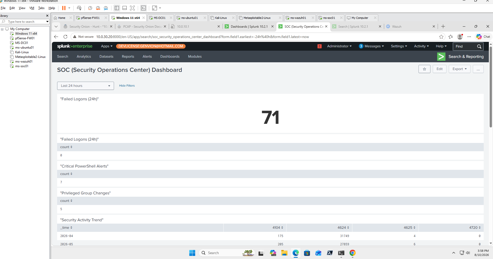
Initial Alert
The investigation began when suspicious activity was identified by one or more monitoring platforms.
Initial Alert Review
- Alert name or signature
- Timestamp
- Severity
- Source system or IP
- Destination system or IP
- Affected user or account
- Initial analyst assessment
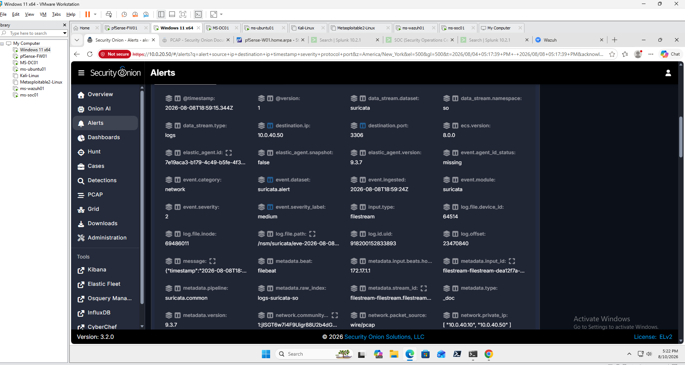
Initial Triage
The alert was triaged to determine whether the activity represented expected behavior, a false positive, or a confirmed security event requiring escalation.
| Triage Question | Analyst Finding |
|---|---|
| What happened? | Suspicious activity was identified and required validation. |
| Where did it originate? | Source host and IP were identified through correlated telemetry. |
| What was targeted? | The affected endpoint, account, or service was identified. |
| When did it happen? | Event timestamps were compared across multiple tools. |
| How severe is it? | Severity was assessed using observed behavior and potential impact. |
| What is the scope? | Related systems, accounts, processes, and connections were reviewed. |
Splunk Enterprise Investigation
Splunk Enterprise was used to search and correlate Windows Security Events, Sysmon telemetry, authentication events, and other centralized security logs.
Example SPL Searches
index=* EventCode=4625
index=* EventCode=4624
index=* "powershell.exe"
index=* host=MS-DC01
| sort 0 _time
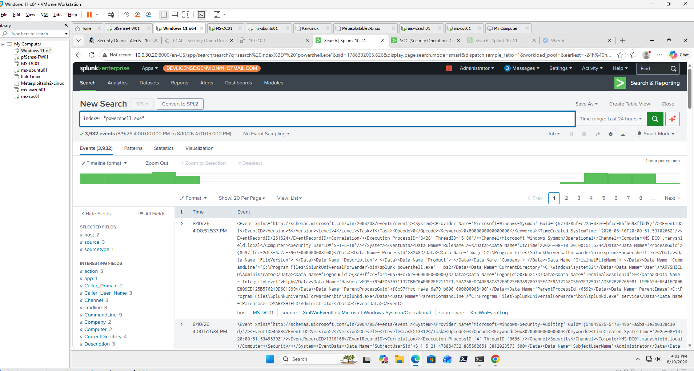
Wazuh XDR Investigation
Wazuh XDR provided endpoint-security context including Windows events, file changes, process activity, system information, security rules, and MITRE ATT&CK mappings.
Investigation Areas
- Agent activity
- Windows Security Events
- Rule descriptions
- Rule severity
- File Integrity Monitoring
- System inventory
- MITRE ATT&CK mapping
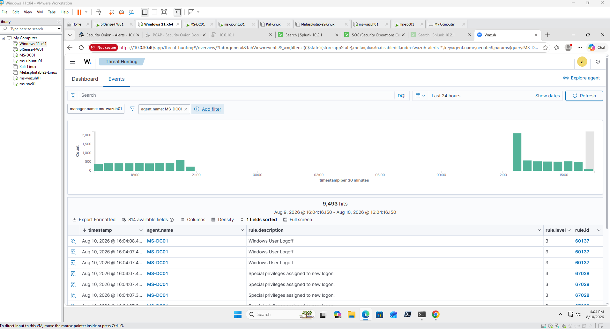
Security Onion Investigation
Security Onion was used to analyze network-level evidence associated with the incident.
Investigation Components
- Alerts
- Hunt
- Suricata IDS
- Zeek metadata
- Protocol analysis
- Packet capture
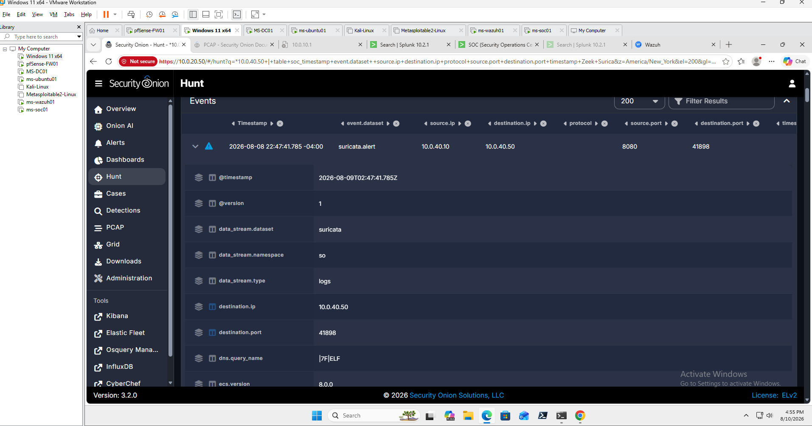
pfSense Firewall Investigation
pfSense firewall logs were reviewed to determine whether suspicious traffic crossed network boundaries and whether connections were permitted or blocked.
Firewall Evidence
- Source IP
- Destination IP
- Source and destination ports
- Protocol
- Interface
- Allow or block action
- Connection timestamp
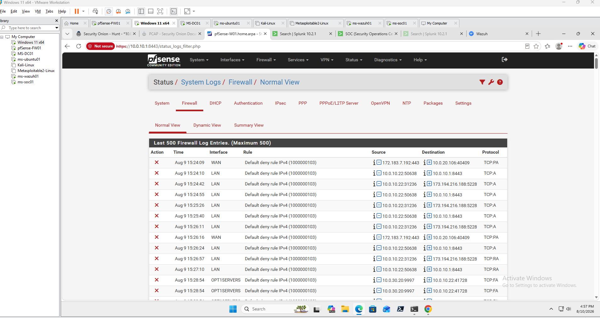
Windows Event Analysis
Windows Security Event Logs were analyzed to identify authentication, account-management, privilege, and Kerberos activity related to the investigation.
Relevant Windows Events
- 4624 — Successful logon
- 4625 — Failed logon
- 4720 — User account created
- 4728 / 4732 — Group membership changes
- 4768 — Kerberos TGT request
- 4769 — Kerberos service ticket request
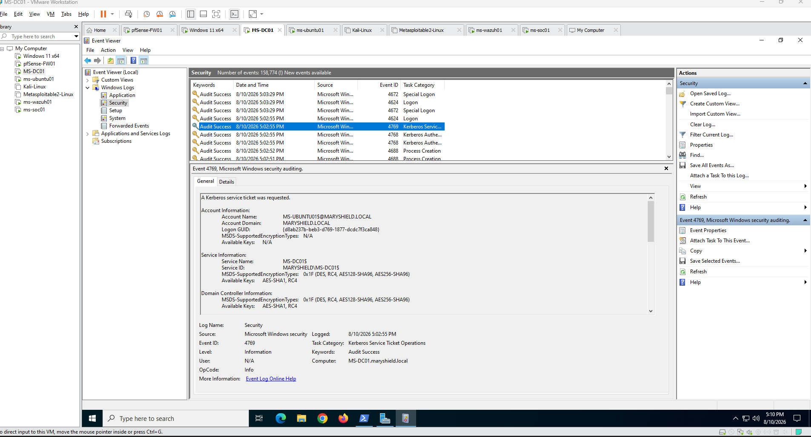
Sysmon Analysis
Sysmon telemetry was reviewed to identify processes, command lines, parent-child relationships, and network activity associated with suspicious endpoint behavior.
Key Evidence
- Process image
- Command line
- Parent process
- User
- Process ID
- Hashes
- Network connection information
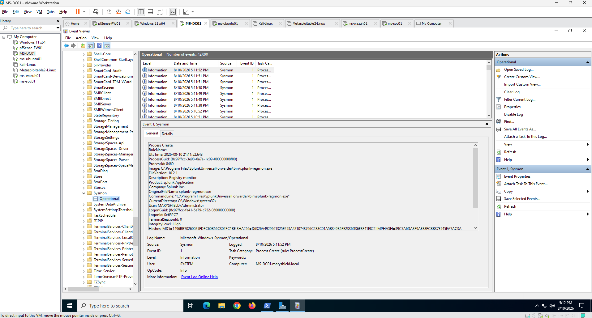
Cross-Platform Event Correlation
Evidence was correlated across SIEM, XDR, IDS, firewall, endpoint, and identity systems to build a complete picture of the activity.
Identity
Determine which account or service identity was involved.
Endpoint
Determine what process or activity occurred on affected hosts.
Network
Determine which systems communicated and through which protocols.
Firewall
Determine whether traffic was allowed, blocked, or crossed security zones.
Time
Align timestamps across all evidence sources.
Context
Determine whether the observed activity formed part of a larger attack sequence.
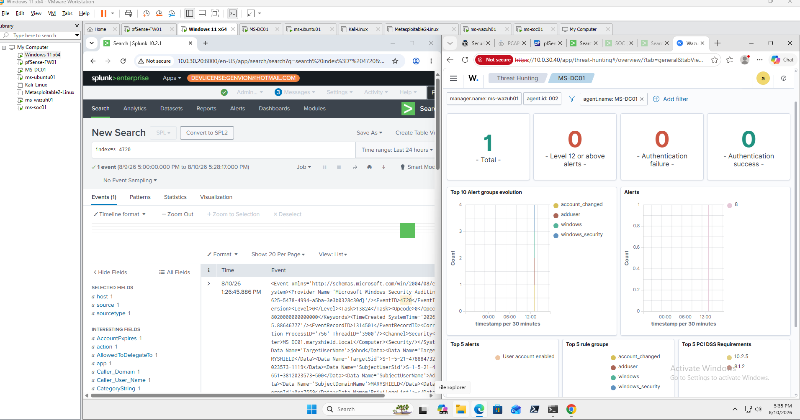
MITRE ATT&CK Mapping
Observed behaviors were mapped to relevant MITRE ATT&CK tactics and techniques when supported by collected evidence.
Reconnaissance
Network or service discovery activity associated with the scenario.
Credential Access
Authentication and credential-related activity identified during the investigation.
Execution
Process or PowerShell execution observed on affected systems.
Privilege Escalation
Account or group changes that may indicate elevated access.
Discovery
Account, service, host, or network discovery observed during the incident.
Lateral Movement
Cross-system activity reviewed when supported by evidence.
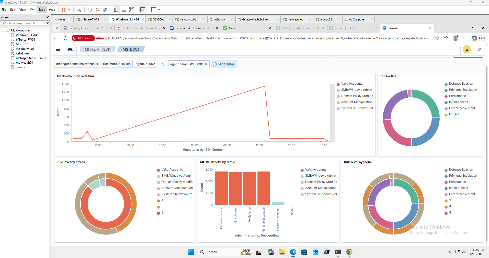
Incident Timeline
Collected evidence was organized chronologically to reconstruct the incident from the initial activity through analyst response.
| Stage | Activity | Evidence Source |
|---|---|---|
| 1 | Initial suspicious activity detected | Security Onion / Splunk |
| 2 | Authentication anomalies identified | Windows / Splunk |
| 3 | Endpoint activity observed | Sysmon / Wazuh |
| 4 | Network connections validated | Security Onion / pfSense |
| 5 | Events correlated across platforms | SOC Analyst |
| 6 | Incident scope determined | Combined evidence |
| 7 | Containment initiated | Incident Response |
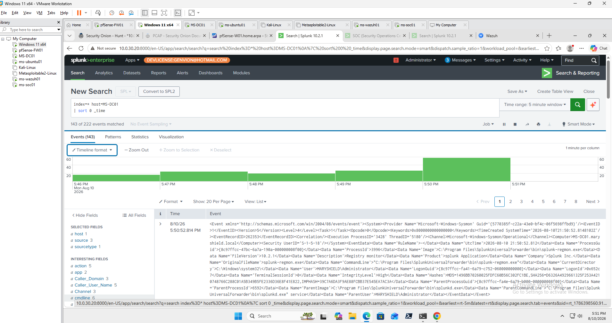
Scope and Impact Assessment
The SOC investigation determined which systems, users, services, and security controls were involved and evaluated the potential impact of the incident.
| Category | Assessment |
|---|---|
| Affected Hosts | Systems identified during evidence correlation. |
| Affected Accounts | Users or service identities associated with suspicious activity. |
| Network Scope | Security zones and communication paths involved in the incident. |
| Observed Processes | Processes and command-line activity identified through endpoint telemetry. |
| Security Impact | Potential confidentiality, integrity, or availability impact. |
| Overall Severity | Severity determined from correlated evidence and potential risk. |
Containment
Containment actions were designed to prevent additional suspicious activity while preserving evidence for investigation.
Containment Actions
- Block suspicious source addresses at pfSense.
- Restrict communication between affected network zones.
- Isolate affected endpoints when appropriate.
- Disable suspicious accounts if necessary.
- Preserve logs and investigation evidence.
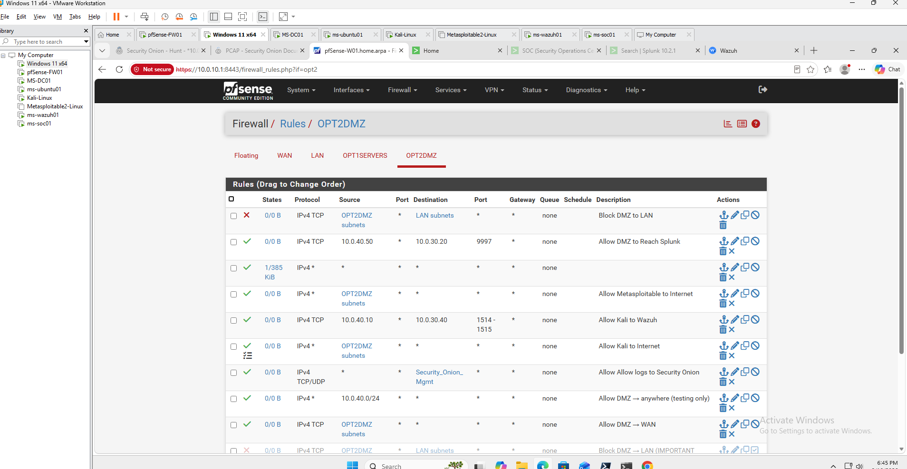
Eradication
After containment, the simulated root cause and associated test artifacts were removed or reversed.
Eradication Activities
- Remove temporary suspicious files or test artifacts.
- Reverse unauthorized or test account changes.
- Disable unnecessary services or exposure.
- Correct vulnerable configurations.
- Reset affected credentials where required.
- Verify no related suspicious activity remains.
Recovery
Systems were returned to normal operation after remediation and security-monitoring services were verified.
Recovery Validation
- Verify Windows systems are functioning normally.
- Confirm Wazuh agents are active.
- Confirm Splunk forwarders are sending data.
- Verify Security Onion monitoring is operational.
- Confirm pfSense network connectivity and firewall rules.
- Review new alerts for recurring suspicious behavior.
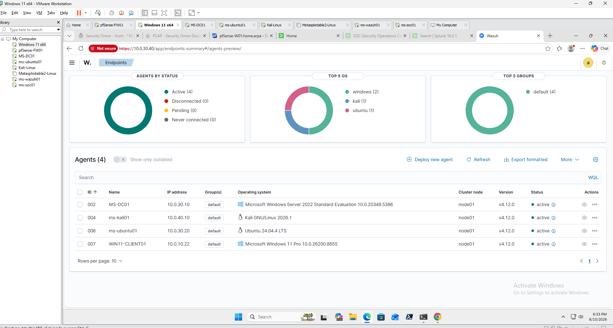
Final Analyst Assessment
The simulated incident was successfully detected and investigated using multiple enterprise security platforms.
Evidence from Splunk Enterprise, Wazuh XDR, Security Onion, pfSense, Windows Event Logs, and Sysmon was correlated to reconstruct the sequence of activity and determine the source, target, scope, and potential impact.
The incident was contained within the lab environment, test conditions were remediated, and monitoring was verified after recovery.
The exercise demonstrated effective cross-platform detection, triage, investigation, correlation, containment, remediation, recovery, and documentation.
Lessons Learned
- Cross-platform correlation improves investigation confidence.
- Timestamps must be aligned carefully across security platforms.
- A single alert rarely provides the complete incident story.
- Endpoint and network telemetry complement each other.
- Windows authentication events are essential for identity investigations.
- Sysmon provides valuable process-level context.
- Firewall evidence helps validate network movement.
- Detection rules require tuning to reduce false positives.
- Evidence preservation is an important part of incident response.
- Clear documentation improves investigation quality and repeatability.
Skills Demonstrated
SOC Triage
Evaluated alerts to determine severity, scope, and investigative priority.
SIEM Analysis
Used Splunk Enterprise to search, correlate, and reconstruct security events.
Endpoint Investigation
Analyzed Wazuh, Windows, and Sysmon endpoint telemetry.
Network Investigation
Reviewed Security Onion, Zeek, Suricata, and packet evidence.
Firewall Analysis
Used pfSense logs to validate network communications and containment actions.
MITRE ATT&CK
Mapped observed activity to standardized attacker tactics and techniques.
Incident Response
Documented containment, eradication, recovery, and post-incident actions.
Security Reporting
Documented evidence, timelines, findings, risk, and recommendations.
Final SOC Analyst Report
The final SOC report summarizes the incident classification, evidence collected, affected systems, MITRE ATT&CK mappings, timeline, response actions, final assessment, and recommended security improvements.
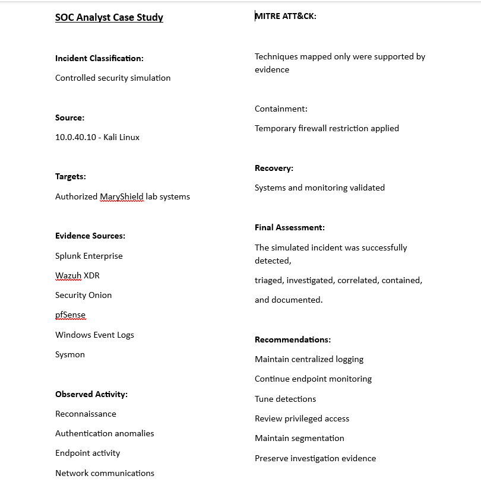
Related Projects
Explore related MaryShield Cyber Lab projects that support enterprise SOC operations, attack detection, and incident response.
Threat Hunting
Proactive investigation and correlation of suspicious activity across multiple telemetry sources.
View ProjectIncident Response
Detection, triage, evidence collection, containment, eradication, and recovery.
View ProjectActive Directory Attack Detection
Detection and investigation of authentication, account, privilege, and PowerShell activity.
View ProjectKerberoasting Detection
Kerberos credential-access detection and Active Directory investigation.
View ProjectSplunk Enterprise
Centralized logging, searches, dashboards, alerts, and SIEM correlation.
View ProjectpfSense Firewall
Segmentation, firewall enforcement, network logging, and incident containment.
View ProjectKali Linux
Controlled offensive security testing used to generate investigation telemetry.
View ProjectMetasploitable 2
Intentionally vulnerable system used for controlled attack simulations.
View Project